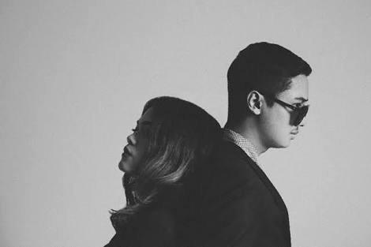

|
Duo elektronik pendatang baru asal Jakarta, KimoKal, mengadakan peluncuran album debut O untuk versi digital. Bertempat di auditorium Institut Francais Indonesia,
KimoKal membawakan lagu-lagu yang terdapat di album tersebut. Berdurasi empat puluh menit, penonton disuguhkan penampilan musik yang dibalut dengan pertunjukan visual.
Pada pertunjukan peluncuran album tersebut, KimoKal memberikan sesuatu yang berbeda dan berkelas. KimoKal tampil dalam sebuah instalasi layar berbentuk prisma segitiga,
permainan cahaya dan efek visual projection mapping ditembakkan ke layar, menjadi pengiring untuk musik elektronik mid-tempo yang dimainkan.
KimoKal berkolaborasi dengan pengarah seni Kinez Riza sementara instalasi panggung dan visual oleh Adi Blak.
KimoKal adalah Rizky Ramadhan (Kimo) dan Kallula Harsyntha. Keduanya memainkan electronic pop dengan pengaruh psychedelic pop, dub dan nu-wave.
Album O menjadi album perkenalan mereka di kancah musik Indonesia. Sebelumnya KimoKal sudah merilis single "Under Your Spell" dan "Adiamo".
Untuk single "Adiamo", KimoKal juga merilis album remix dengan pengisi Hogi Wirjono, Mahesa Utara, Hendra Jaya Putra (Rock N Roll Mafia) dan lain-lain.

Album O berisikan sembilan lagu, dengan tambahan satu lagu "Under Your Spell". O atau full circle dipilih sebagai judul album untuk merpresentasikan perjalanan KimoKal.
Sebuah penyelesaian siklus transisi dari masa lalu, sekarang dan masa depan. Lagu "Lonely Child" dijadikan andalan dan akan dirilis video musiknya pada Februari mendatang.
" Let me swallow things that you can't contain "
KimoKal - Lonely Child
Album O sudah tersedia di outlet musik digital. Album fisik dirilis pada Februari dan dipasarkan di beberapa negara seperti Inggris,
Jepang dan Singapura.
|